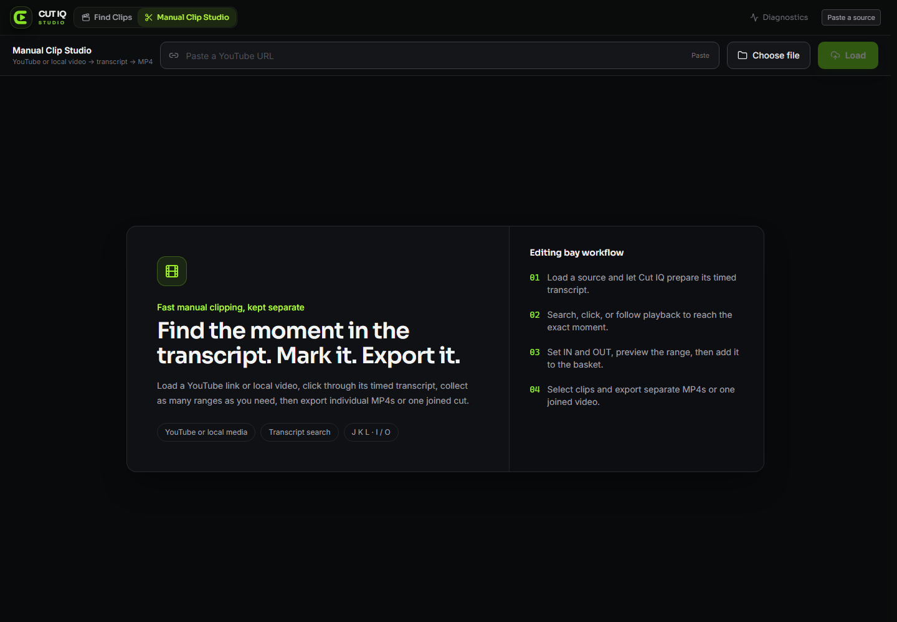
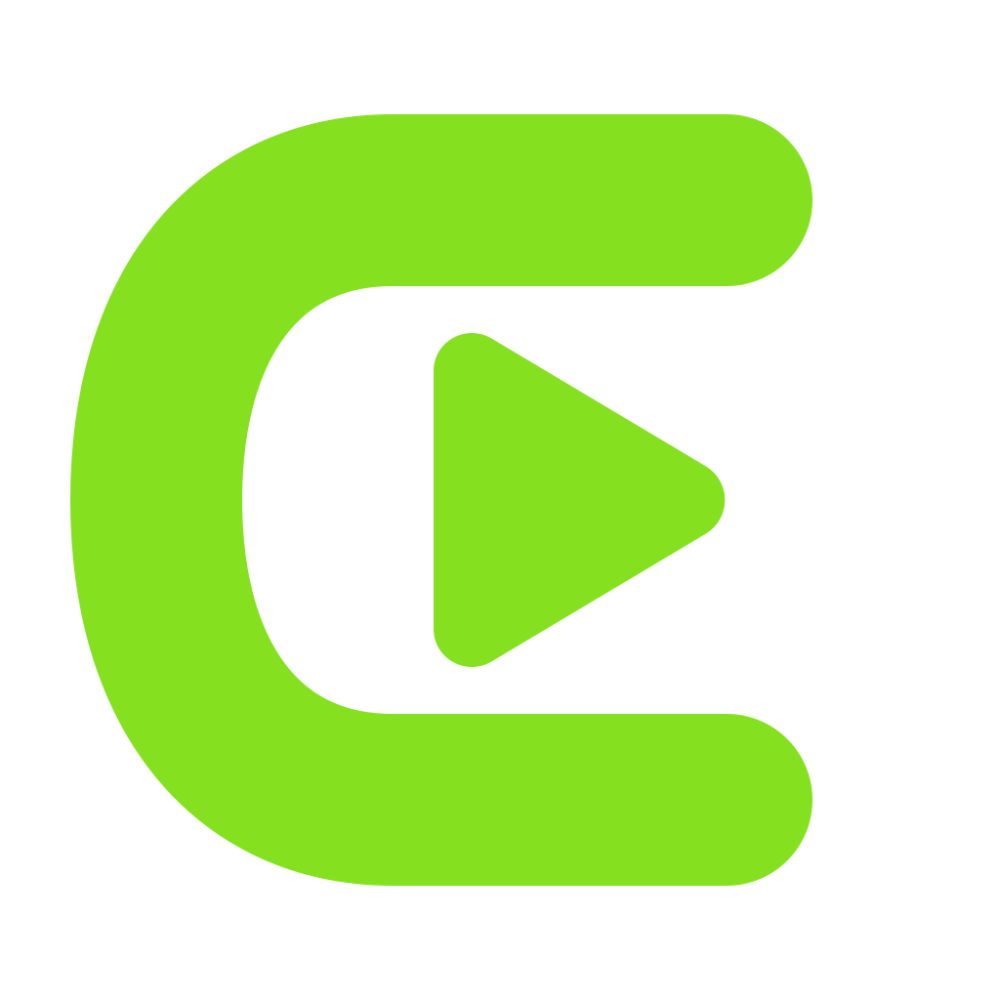

⌕
Find Clips
Turn a player, team, season, and optional script into grounded candidates ready for review.
 Download
Download
Cut IQ turns long videos, transcripts, and coverage plans into precise, reviewable clips—without sending your projects to a cloud editor.

Three focused workspaces share one project library, so discovery, precision editing, and delivery stay connected.
Turn a player, team, season, and optional script into grounded candidates ready for review.
Follow timed text, mark exact IN/OUT ranges, preview, and export separate or joined cuts.
Review completed assets, revise safely, preserve originals, and deliver clean packages.
Loopback onlyThe app and database listen on 127.0.0.1—not your LAN or the public web.
No accountNo analytics, telemetry, advertising profile, or mandatory cloud sign-in.
Local outputsFinished clips live in your Videos folder. Drive export is explicit opt-in.
Open sourceInspect the code, build it yourself, and verify every release workflow.
Finding clips, reviewing them, and rendering single clips are free forever, with no account and no sign-up. Pro is a one-time purchase that unlocks the batch and delivery work. No subscription.
FreeFind clips, review moments, render single clips, build assemble projects, export locally.
Pro — $29.99 onceBatch render a whole project or every moment on a video, clip package export, broadcast soundbites, and Drive sync.
Pro keys are verified on your own machine against a public key built into the app. Activating one does not contact a server or create an account. Keys are issued by hand today, so allow a few hours after buying.

CUT WITH INTENT